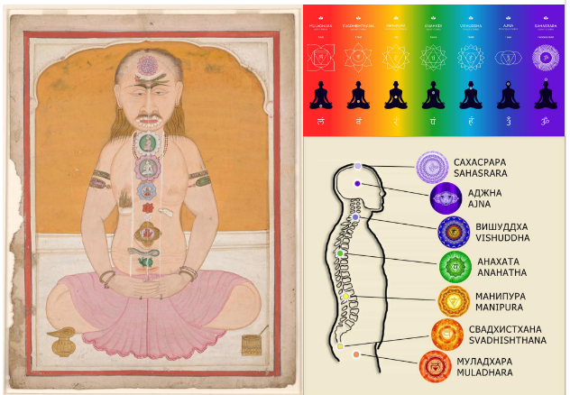

Centros de Força
1. IntroduçãoO conceito de centros de força ocupa lugar significativo em parte da literatura espírita dedicada à constituição do ser espiritual e às relações entre o espírito e o organismo físico. Associados à circulação e à transformação de energias que participariam da organização e do funcionamento do perispírito, esses centros foram objeto de desenvolvimentos teóricos posteriores à obra de Allan Kardec, adquirindo particular relevância nos trabalhos de autores como André Luiz, por intermédio da psicografia de Francisco Cândido Xavier, e Edgard Armond.
Embora a expressão centros de força seja frequentemente aproximada do conceito indiano de chakras, essa associação exige uma investigação cuidadosa. As tradições indianas desenvolveram diferentes sistemas de centros sutis, vinculados a concepções próprias sobre o corpo, a consciência, a respiração, a prática espiritual e a libertação. Esses sistemas não constituem um conjunto uniforme de doutrinas, tampouco podem ser reduzidos a uma única descrição anatômica ou funcional. Por sua vez, a literatura espírita elaborou suas próprias explicações, relacionadas à concepção de espírito, perispírito e vida corporal, no contexto de uma tradição doutrinária específica.
O problema central deste estudo consiste, portanto, em compreender como a literatura espírita desenvolveu a concepção de centros de força e em investigar em que medida esse desenvolvimento pode ser examinado em diálogo com as tradições espirituais antigas, especialmente as indianas, sem estabelecer equivalências que as fontes não autorizam. Essa investigação exige distinguir aquilo que está efetivamente presente na obra de Allan Kardec das formulações elaboradas por autores posteriores, bem como separar as informações historicamente documentadas das interpretações construídas a partir de semelhanças conceituais.
O objetivo do artigo é examinar os fundamentos da concepção espírita do ser espiritual, acompanhar o desenvolvimento posterior do conceito de centros de força e confrontá-lo, em perspectiva comparativa, com os sistemas indianos de chakras. Busca-se identificar aproximações relevantes, diferenças de significado e limites interpretativos, evitando tanto a atribuição retrospectiva de conceitos à codificação espírita quanto a suposição de que semelhanças entre tradições comprovem uma origem comum ou uma transmissão histórica direta.
O método adotado é bibliográfico, histórico e comparativo. Parte-se das obras de Allan Kardec para estabelecer os fundamentos doutrinários pertinentes; em seguida, examinam-se as contribuições de autores espíritas posteriores e as fontes relativas às tradições indianas, considerando seus respectivos contextos de produção. As comparações serão realizadas a partir de elementos documentados nas fontes consultadas, com atenção às diferenças de terminologia, finalidade e pressupostos filosóficos. Outras tradições antigas somente serão consideradas quando sua inclusão contribuir efetivamente para a questão investigada e houver documentação adequada para sustentá-la.
Essa abordagem pretende contribuir para uma compreensão historicamente situada dos centros de força na literatura espírita, reconhecendo o valor das aproximações entre diferentes tradições espirituais sem transformar analogias em identidades doutrinárias. Mais do que procurar uma correspondência exata entre sistemas distintos, interessa compreender como cada tradição concebe a constituição do ser, suas relações com o corpo e os processos associados ao desenvolvimento espiritual.
2. O ser espiritual em Allan Kardec: alma, perispírito e princípio vital
Para compreender o desenvolvimento posterior do conceito de centros de força na literatura espírita, é necessário estabelecer inicialmente os fundamentos da concepção do ser espiritual apresentado por Allan Kardec. Essa delimitação é importante porque as obras espíritas posteriores ampliaram as descrições do organismo perispiritual e de suas relações com o corpo físico, mas tais desenvolvimentos não devem ser atribuídos automaticamente à codificação espírita.
A análise parte de três conceitos fundamentais: alma, perispírito e princípio vital. Embora relacionados na explicação da existência humana, eles não são sinônimos e desempenham funções conceituais distintas no pensamento de Kardec.
2.1. Alma e espírito: a individualidade espiritual
Em O Livro dos Espíritos, Kardec examina a natureza dos espíritos, sua individualidade e suas relações com o mundo corporal. Na questão 134, a obra distingue o espírito, entendido como ser inteligente, do corpo material que ele anima. Na questão 135 (Kardec,2012, questão 135), a constituição do ser humano é apresentada mediante três elementos: o corpo, o espírito e o laço que os une.
Essa formulação estabelece uma distinção fundamental entre o organismo material e o princípio inteligente. O ser humano encarnado não se reduz ao corpo físico, mas também não corresponde simplesmente à soma de estruturas corporais e espirituais. A concepção espírita pressupõe uma individualidade espiritual que subsiste à morte do organismo e mantém sua identidade ao longo de sua trajetória evolutiva.
A terminologia exige, entretanto, uma observação. Kardec emprega as palavras alma e espírito em relações conceituais que dependem do contexto. Na definição apresentada em O Livro dos Espíritos, questão 134 (Kardec,2012, questão 134), o espírito é o ser inteligente da criação, enquanto a alma é o espírito encarnado. A distinção procura evitar que se confundam a individualidade espiritual e sua condição de existência durante a encarnação.
Do ponto de vista doutrinário, essa distinção é decisiva para o presente estudo: os centros de força, quando descritos na literatura espírita posterior, são apresentados em relação à organização do perispírito e às interações entre o espírito e o organismo. Não constituem, na formulação de Kardec, elementos que definam a própria essência do espírito.
2.2. O perispírito: o envoltório semimaterial do espírito
O perispírito ocupa uma posição intermediária na concepção espírita da constituição humana. Em O Livro dos Espíritos, questão 93 (Kardec,2012, questão 93), Kardec apresenta o espírito como revestido de uma substância vaporosa para nossa percepção, embora suficientemente material para constituir um envoltório. Na questão 94 (Kardec,2012, questão 94), investiga a origem dessa substância e sua relação com o fluido universal de cada mundo.
O conceito permite compreender a relação entre a individualidade espiritual e as manifestações que lhe são atribuídas no plano de existência extrafísico. O perispírito não se confunde com o corpo biológico, tampouco com o próprio espírito: é o envoltório que acompanha o espírito e participa, na explicação espírita, de suas relações com a matéria.
Em O Livro dos Médiuns, especialmente no capítulo I da segunda parte (Kardec, parte segunda capítulo XVII, fls. 178, 2004), Kardec retoma a questão das manifestações dos espíritos e examina o papel do perispírito na produção de fenômenos que envolvem a interação entre o mundo espiritual e o material. A obra, portanto, oferece elementos para compreender a função mediadora desse envoltório, embora não desenvolva uma anatomia sistemática de centros de força.
Essa distinção permite estabelecer um limite importante para a investigação. A existência conceitual do perispírito na codificação não implica que todas as descrições posteriores de sua organização, de seus mecanismos ou de seus centros funcionais já estivessem formuladas na obra de Kardec. É necessário examinar cada desenvolvimento posterior em seu próprio contexto e identificar quais elementos derivam explicitamente da codificação e quais representam ampliações interpretativas.
2.3. O princípio vital: a vida orgânica e suas relações com o perispírito
O terceiro conceito necessário à análise é o princípio vital, examinado por Kardec em O Livro dos Espíritos e desenvolvido particularmente em A Gênese, capítulo X, seção dedicada ao princípio vital (Kardec, 2010, cap. X, item 16, fls. 221)
Em O Livro dos Espíritos, questões 136 (Kardec,2012, questão 136) e 140 (Kardec,2012, questão 140), Kardec investiga as relações entre a alma, a vida corporal e o princípio vital. Já em A Gênese, nos itens 16 a 19 do capítulo X (Kardec,2010, itens 16-19), distingue a matéria orgânica de seu princípio de vida e considera a possibilidade de que este corresponda a uma modificação particular do fluido cósmico universal. A discussão procura explicar a especificidade dos seres vivos sem confundir a vida orgânica com a existência do princípio inteligente.
É importante observar que, no vocabulário kardeciano, o princípio vital não equivale ao espírito nem ao perispírito. O espírito corresponde ao princípio inteligente; o perispírito, ao envoltório semimaterial do espírito; e o princípio vital está relacionado à vida dos organismos. Embora esses conceitos se articulem na explicação espírita da existência humana, cada um ocupa uma posição própria no sistema doutrinário.
Essa distinção será particularmente relevante quando examinarmos os centros de força. Em obras posteriores, encontramos descrições de funções atribuídas ao perispírito, de circulação de energias e de relações entre diferentes estruturas do organismo espiritual. Entretanto, não se deve concluir, sem examinar cada fonte, que todas essas funções correspondam ao princípio vital tal como apresentado por Kardec.
Do ponto de vista técnico, convém evitar uma equivalência terminológica que produza confusão entre três níveis explicativos: o princípio inteligente, o envoltório perispiritual e o princípio de vida orgânica. A existência de relações entre eles, dentro da doutrina espírita, não elimina suas diferenças conceituais.
2.4. A codificação espírita e os limites do conceito de centros de força
Estabelecidos os conceitos anteriores, podemos delimitar a questão central desta seção: o que a obra de Kardec permite afirmar a respeito dos centros de força?
Em O Livro dos Espíritos, encontramos a descrição do perispírito como envoltório semimaterial, a discussão sobre sua origem e sua função de ligação entre o espírito e o corpo. Em O Livro dos Médiuns, encontramos o exame das manifestações espirituais e da participação do perispírito nesses fenômenos. Em A Gênese, por sua vez, são desenvolvidas considerações sobre os fluidos, a formação dos seres vivos e o princípio vital.
Esses elementos constituem antecedentes conceituais importantes para compreender os desenvolvimentos posteriores da literatura espírita. Contudo, não encontramos nessas formulações uma exposição sistemática dos centros de força comparável às descrições que seriam elaboradas por autores espíritas posteriores.
Essa constatação não significa que o conceito posterior seja necessariamente incompatível com a codificação. Significa apenas que precisamos distinguir a existência de fundamentos doutrinários gerais da formulação específica de um modelo explicativo. Uma coisa é reconhecer que Kardec concebe o perispírito como elemento intermediário entre o espírito e o corpo; outra é atribuir lhe uma descrição detalhada de centros perispirituais, com localizações, funções e correspondências orgânicas que não foram sistematizadas por ele nesses termos.
O cuidado é metodológico e não uma tentativa de diminuir a contribuição de autores posteriores. Uma doutrina pode receber desenvolvimentos interpretativos ao longo do tempo, desde que esses desenvolvimentos sejam identificados como tais e examinados criticamente.
Também é necessário evitar o movimento inverso: não devemos interpretar retrospectivamente cada referência kardeciana aos fluidos como se ela já contivesse, de maneira implícita e completa, a teoria posterior dos centros de força. Semelhança temática não equivale a identidade conceitual.
2.5. Síntese conceitual: os fundamentos para a investigação posterior
Para organizar a análise, podemos resumir as distinções estabelecidas nesta seção:
| Conceito | Sentido na codificação espírita | Relevância para o estudo |
|---|---|---|
| Espírito | Ser inteligente, dotado de individualidade própria. | Constitui o princípio inteligente ao qual se vinculam as explicações sobre a existência espiritual. |
| Alma | Espírito encarnado, conforme O Livro dos Espíritos, questão 134. | Designa o espírito em sua condição de encarnação. |
| Perispírito | Envoltório semimaterial que envolve o espírito e participa de sua ligação com o corpo. | Constitui o principal antecedente conceitual para examinar as descrições posteriores dos centros de força. |
| Princípio vital | Princípio relacionado à vida orgânica, discutido em O Livro dos Espíritos e A Gênese. | Permite distinguir a vida do organismo da individualidade espiritual e de seu envoltório. |
| Centros de força | Conceito desenvolvido de forma mais sistemática em obras espíritas posteriores a Kardec. | Constitui o objeto específico da investigação histórica e doutrinária das próximas seções. |
A tabela sintetiza as distinções necessárias ao artigo; não pretende estabelecer equivalências entre conceitos de tradições diferentes nem antecipar as conclusões da comparação.
O resultado desta primeira etapa é uma delimitação do campo doutrinário: a codificação oferece elementos para compreender a relação entre espírito, perispírito e corpo, mas a análise específica dos centros de força exige o estudo das obras posteriores que desenvolveram esse conceito.
É a partir desse ponto que poderemos investigar a tradição indiana dos chakras sem pressupor que ela e a literatura espírita descrevam necessariamente uma mesma estrutura.
Referências utilizadas nesta seção
-
KARDEC, Allan. O Livro dos Espíritos. Tradução Sandra Keppler. 6ª ed. São Paulo: Mundo Maior Editora, 2012. Questões 93–95, 134–136 e 140.
-
KARDEC, Allan. O Livro dos Médiuns: Guia dos Evocadores. Tradução Renata Barboza da Silva, Sione T. Nakamura Bele da Silva. São Paulo: Petit, 2004. Segunda parte, capítulo I, sobre a ação dos espíritos e as manifestações.
-
KARDEC, Allan. A Gênese: Os Milagres e as Predições Segundo o Espiritismo. Tradução Alberina Escudeiro Sêco. 3ª ed. Rio de Janeiro: CEKD, 2010. Capítulo X, itens 16–19, sobre o princípio vital.
3. Os chakras nas tradições indianas: contexto histórico, diversidade de concepções e desenvolvimento dos sistemas de centros sutis
A investigação dos centros de força na literatura espírita exige examinar o conceito de chakra em seu contexto histórico e religioso de origem. Essa etapa é necessária para evitar que semelhanças entre sistemas espirituais diferentes sejam tomadas como prova de identidade conceitual ou de uma origem comum.
O termo chakra, transliterado do sânscrito como cakra, significa literalmente “roda” ou “círculo”. Em determinadas tradições indianas, passou a designar centros sutis integrados a modelos específicos de constituição do corpo, de prática contemplativa e de transformação espiritual. Entretanto, não existe um único sistema de chakras compartilhado de maneira uniforme por todas as escolas indianas. Os textos apresentam diferentes quantidades, disposições, funções e interpretações desses centros, conforme suas orientações religiosas e práticas.
A compreensão histórica desse conceito requer, portanto, distinguir a formação das ideias sobre o corpo sutil, o desenvolvimento dos sistemas de chakras em tradições específicas e as interpretações modernas que difundiram determinadas configurações, sobretudo o modelo de sete centros.
3.1. Antecedentes históricos: corpo, respiração e realidade sutil
As tradições religiosas e filosóficas indianas desenvolveram, ao longo de muitos séculos, diferentes concepções sobre a constituição do ser humano. Nos textos védicos e, posteriormente, nas Upanishads1, encontramos reflexões sobre a respiração vital (prāṇa), a consciência, o princípio da individualidade e a relação entre o ser humano e a realidade última.
Essas concepções constituem antecedentes importantes para a história das ideias indianas sobre a dimensão sutil da existência. Contudo, é necessário estabelecer uma distinção histórica: a presença de conceitos como prāṇa e de especulações sobre a constituição do ser não significa que os sistemas de chakras já estivessem plenamente formulados nos textos mais antigos.
A pesquisa acadêmica contemporânea situa o desenvolvimento das tradições tântricas historicamente identificáveis, em suas formas próprias, sobretudo a partir de meados do primeiro milênio da era comum. As tradições hindus e budistas desenvolveram práticas e sistemas distintos, embora também tenham ocorrido intercâmbios entre elas. A atribuição de sistemas complexos de chakras às mais remotas épocas da civilização indiana, sem documentação textual adequada, ultrapassa aquilo que as evidências históricas permitem afirmar.
Do ponto de vista técnico, convém distinguir três categorias frequentemente aproximadas na literatura espiritual:
Prāṇa: princípio ou força vital associado à respiração e às funções vitais em diferentes sistemas indianos.
Nāḍī: canal ou via sutil descrita em determinados modelos de constituição do corpo.
Cakra: centro ou estrutura sutil cuja natureza e função dependem do sistema textual e ritual considerado.
Esses termos pertencem a contextos doutrinários específicos. Suas traduções para expressões modernas como “energia”, “canal energético” ou “centro de energia” podem facilitar a compreensão inicial, mas não reproduzem necessariamente toda a extensão de seus significados tradicionais.
Além disso, o vocabulário não deve ser interpretado automaticamente como descrição anatômica do organismo físico. Nos sistemas de yoga e tantra que empregam esses conceitos, o corpo sutil pode constituir uma estrutura contemplativa, ritual e cosmológica, por meio da qual o praticante representa e realiza determinadas transformações espirituais.
<3.2. O desenvolvimento dos sistemas de chakras nas tradições tântricas
A compreensão histórica dos chakras torna-se mais precisa quando examinamos as tradições tântricas indianas, nas quais esses centros adquiriram funções específicas em determinados modelos de corpo sutil.
O tantra não corresponde a uma doutrina única. A expressão abrange conjuntos diversos de tradições religiosas, práticas rituais, concepções filosóficas e métodos de transformação espiritual. No hinduísmo, encontramos correntes tântricas associadas, entre outras, ao śivaísmo e ao śāktismo; no budismo, desenvolveram-se tradições tântricas próprias, com pressupostos e finalidades relacionados às respectivas doutrinas.
Em determinados sistemas, o corpo humano é concebido como um espaço de realização ritual e contemplativa, no qual canais sutis, centros, mantras, divindades e diferentes formas de visualização desempenham funções articuladas. Os chakras não devem, portanto, ser isolados de seus contextos como se fossem peças de uma anatomia universal independente das tradições que lhes atribuem significado.
A documentação histórica revela variações importantes na quantidade e na organização desses centros. Há sistemas que descrevem quatro chakras, outros que apresentam cinco ou seis, e outros que incluem sete ou números ainda diferentes. A disposição vertical ao longo do corpo, frequentemente reproduzida nas representações modernas, não esgota a diversidade das concepções históricas.
Estudos sobre a formação dos sistemas de yoga e tantra identificam configurações distintas em textos medievais hindus e budistas. O desenvolvimento de modelos com seis centros, por exemplo, pode ser acompanhado em fontes tântricas medievais, enquanto outras tradições elaboraram organizações diferentes, relacionadas a seus próprios objetivos rituais e contemplativos.
Essa diversidade tem uma consequência metodológica direta para o presente artigo: não é adequado falar dos chakras como se todos os textos indianos apresentassem a mesma estrutura, nem presumir que qualquer descrição de centros sutis corresponda necessariamente ao modelo de sete chakras popularizado no Ocidente.
3.3. Os sete chakras e a difusão de um modelo particular

os
sete chakras
O modelo de sete chakras é hoje uma das representações mais conhecidas das tradições indianas. Nele, os centros são geralmente apresentados em sequência ascendente, desde a região da base do tronco até o alto da cabeça. Essa configuração tornou se especialmente difundida nas publicações modernas sobre yoga, espiritualidade e práticas de desenvolvimento pessoal.
Os sete nomes habitualmente empregados são:
| Nome sânscrito | Tradução aproximada tradicional |
|---|---|
| Mūlādhāra | Suporte da raiz |
| Svādhiṣṭhāna | Morada própria |
| Maṇipūra | Cidade da joia |
| Anāhata | Não golpeado ou não produzido por impacto |
| Viśuddha | Purificação |
| Ājñā | Comando ou orientação |
| Sahasrāra | Associado à imagem de mil pétalas |
Essas traduções são aproximativas e não esgotam os significados simbólicos atribuídos aos nomes nas diferentes tradições.
A representação dos sete centros costuma associar cada um a determinadas regiões corporais, imagens de lótus, sílabas, divindades, elementos e funções contemplativas. Entretanto, as correspondências específicas variam segundo os textos e as linhagens. Não é metodologicamente correto apresentar todas as associações encontradas em manuais modernos como se integrassem um sistema único e imutável desde a Antiguidade.
Um marco importante na difusão moderna desse modelo foi a circulação, em língua inglesa, de interpretações e traduções de textos tântricos, entre eles o Ṣaṭcakranirūpaṇa2, obra associada ao autor bengali Pūrṇānanda e datada do século XVI. Sua recepção contribuiu para a formação de representações modernas dos chakras, posteriormente reinterpretadas em contextos ocidentais. Essa trajetória demonstra que o conhecimento atual sobre os chakras resulta tanto de tradições indianas históricas quanto de processos posteriores de tradução, seleção e reorganização.
É importante, assim, distinguir o modelo de sete chakras atualmente difundido de toda a história indiana dos centros sutis. O primeiro constitui uma configuração particular que alcançou ampla circulação; a segunda abrange um conjunto mais diversificado de sistemas e concepções.
3.4. Função dos chakras: além da analogia anatômica
A interpretação dos chakras exige considerar sua função dentro dos sistemas que os descrevem. Em determinadas tradições tântricas e de yoga, eles integram práticas de visualização, meditação, recitação de mantras e transformação do praticante. Podem estar relacionados a concepções cosmológicas, à organização ritual do corpo e a processos de realização espiritual.
Nesse contexto, a descrição de um chakra não equivale necessariamente à identificação de uma estrutura física localizada em determinado órgão. Sua posição pode corresponder a um ponto de concentração contemplativa ou a uma localização simbólica estabelecida pelo sistema ritual. O corpo sutil, nessa perspectiva, não deve ser confundido com uma representação anatômica do corpo biológico.
Essa distinção também impede uma associação imediata entre os chakras e estruturas da fisiologia moderna, como glândulas endócrinas, plexos nervosos ou regiões específicas do sistema nervoso. Algumas interpretações contemporâneas propõem correspondências desse tipo, mas elas devem ser reconhecidas como interpretações posteriores, não como equivalências historicamente demonstradas nem como comprovação científica da anatomia sutil tradicional.
Do ponto de vista histórico-religioso, a questão principal não é determinar se os chakras correspondem a estruturas físicas identificáveis, mas compreender como os sistemas que os empregam organizam suas concepções de corpo, consciência e transformação espiritual. Essa abordagem permite examinar o significado religioso dos centros sutis sem confundir a análise histórica com uma afirmação de natureza biomédica.
3.5. O alcance da comparação com a literatura espírita
O exame das tradições indianas permite estabelecer algumas condições para a comparação com os centros de força descritos na literatura espírita.
Em primeiro lugar, ambos os conjuntos de textos podem empregar modelos de organização sutil do ser humano, associando determinadas estruturas a funções que ultrapassam a descrição do organismo físico. Essa aproximação é relevante como ponto de partida comparativo, mas não demonstra, por si só, que os conceitos possuam o mesmo significado.
Em segundo lugar, os sistemas indianos de chakras estão inseridos em tradições históricas e religiosas específicas, nas quais corpo sutil, práticas contemplativas, cosmologia e realização espiritual podem constituir dimensões interdependentes. Já as descrições espíritas deverão ser examinadas a partir de seus próprios pressupostos doutrinários, sobretudo a concepção de espírito e perispírito e as explicações desenvolvidas por autores posteriores a Kardec.
Em terceiro lugar, a semelhança entre o número de centros, sua disposição corporal ou as funções atribuídas a eles não basta para demonstrar transmissão histórica direta. Para sustentar uma hipótese de influência, seria necessário apresentar documentação sobre a circulação de textos, o contato entre autores, a recepção de determinadas doutrinas ou outras evidências históricas pertinentes.
Portanto, a comparação deverá operar em dois níveis distintos: o das semelhanças estruturais, que permitem identificar analogias entre modelos, e o dos fundamentos conceituais, que exigem investigar o significado de cada modelo em seu contexto original. A primeira aproximação pode sugerir perguntas para a pesquisa; a segunda é indispensável para evitar equivalências indevidas.
3.6. Síntese histórica e conceitual
A análise das tradições indianas permite formular três conclusões preliminares.
A primeira é que os sistemas de chakras se desenvolveram historicamente em contextos religiosos específicos e não constituem uma doutrina uniforme presente, em sua forma completa, desde os primórdios da civilização indiana.
A segunda é que os chakras podem desempenhar funções contemplativas, rituais, simbólicas e cosmológicas, de acordo com os sistemas em que aparecem. Sua interpretação não pode ser reduzida a uma suposta anatomia energética universal.
A terceira é que o modelo de sete chakras, embora atualmente muito conhecido, representa uma configuração particular dentro de uma história mais ampla e diversificada. Seu uso como padrão universal para interpretar todas as tradições indianas seria historicamente inadequado.
Essas conclusões oferecem a base necessária para o exame da literatura espírita posterior a Allan Kardec. A partir delas, será possível investigar como autores espíritas desenvolveram a concepção de centros de força, quais funções lhes atribuíram e em que medida suas descrições permitem estabelecer aproximações com os sistemas indianos — sempre distinguindo a documentação disponível das interpretações comparativas.
Referências acadêmicas de apoio consultadas nesta seção
-
GRAY, David B. Tantra and the Tantric Traditions of Hinduism and Buddhism. Oxford Research Encyclopedia of Religion, 2016.
-
PRATES, Luciana Cangussu. Noções introdutórias sobre os chakras no Hinduísmo. Interações, 2023.
-
WHITE, David Gordon. Estudos reunidos sobre a história dos sistemas de chakras, conforme referências bibliográficas especializadas citadas na literatura acadêmica consultada.
4. Os centros de força na literatura espírita: de Edgard Armond a André Luiz
O desenvolvimento do conceito de centros de força na literatura espírita deve ser compreendido como parte de uma elaboração posterior à codificação de Allan Kardec. Embora a doutrina kardeciana ofereça fundamentos para o estudo do espírito, do perispírito, dos fluidos e das relações entre o princípio espiritual e o organismo físico, a apresentação sistemática de centros perispirituais com denominações e funções específicas aparece em obras posteriores.
Nesse desenvolvimento, destacam-se duas contribuições que merecem ser examinadas separadamente: a de Edgard Armond, (ARMOND, 1999) particularmente em Passes e Radiações, e a atribuída ao espírito André Luiz, por intermédio da psicografia de Francisco Cândido Xavier, especialmente em Entre a Terra e o Céu.
A importância de distinguir essas contribuições está no fato de que os autores não abordam necessariamente os centros de força sob a mesma perspectiva. Armond dedica atenção à organização dos conhecimentos utilizados na prática espírita do passe e à interpretação dos centros em relação à transmissão e à distribuição de recursos fluídicos (ARMOND, 1999). André Luiz (Xavier, 1954, cap. 20), por sua vez, apresenta descrições inseridas em narrativas sobre a vida espiritual, nas quais os centros participam da explicação das relações entre o espírito, o perispírito e o organismo físico.
O objetivo desta seção é examinar essas formulações em seus próprios contextos, sem atribuir retrospectivamente a Kardec conceitos que não foram sistematizados por ele e sem presumir que os modelos de Armond e André Luiz sejam idênticos entre si ou reproduções exatas dos sistemas indianos de chakras.
4.1. A codificação espírita como fundamento e limite de atribuição
Conforme examinado na segunda seção, O Livro dos Espíritos, O Livro dos Médiuns e A Gênese oferecem elementos para compreender a constituição do ser humano na perspectiva espírita. A noção de perispírito, em particular, permite considerar um envoltório semimaterial que acompanha o espírito e participa de suas relações com o corpo.
Esses fundamentos, entretanto, não constituem, por si mesmos, uma descrição sistemática dos centros de força. A codificação não apresenta uma classificação organizada equivalente àquela que encontramos em autores espíritas posteriores, com sete centros nomeados, funções específicas e correspondências estabelecidas entre regiões do organismo espiritual e determinadas atividades corporais.
Essa diferença deve ser entendida com precisão. Não significa que os desenvolvimentos posteriores sejam necessariamente incompatíveis com o pensamento kardeciano, mas que sua origem textual precisa ser identificada corretamente. A existência de um conceito geral na codificação não autoriza atribuir lhe todas as especificações elaboradas posteriormente.
Do ponto de vista histórico, essa distinção permite compreender a literatura espírita como um campo de desenvolvimento doutrinário e interpretativo. A codificação constitui a referência fundamental para o Espiritismo, enquanto as obras posteriores podem ser examinadas como contribuições que ampliam, organizam ou interpretam determinados aspectos da constituição espiritual do ser humano.
A análise dos centros de força deverá, portanto, observar três aspectos: o que cada autor declara expressamente; como essas declarações se relacionam com os fundamentos kardecianos; e quais elementos constituem interpretações próprias, que exigem exame independente.
4.2. Edgard Armond: os centros de força e a organização do passe espírita
A obra Passes e Radiações, de Edgard Armond, constitui uma referência importante para o estudo da sistematização dos centros de força no movimento espírita brasileiro. Sua abordagem está ligada às práticas de assistência espiritual, particularmente ao passe, e procura organizar conhecimentos sobre a constituição sutil do ser humano e a atuação dos recursos fluídicos.
Armond incorpora à sua exposição uma terminologia que apresenta aproximações com os sistemas orientais de chakras. Os centros de força são compreendidos em relação à organização perispiritual e às funções que o autor lhes atribui na circulação e na distribuição de fluidos. Sua proposta procura estabelecer uma relação entre essas estruturas, o organismo físico e as práticas de transmissão fluídicas realizadas no contexto espírita.
Essa abordagem possui uma finalidade predominantemente prática e organizadora. O interesse de Armond não se limita à descrição da constituição espiritual do ser humano: envolve também a preparação dos trabalhadores, a compreensão do passe e a organização de procedimentos de assistência espiritual.
É importante, entretanto, distinguir o modelo proposto pelo autor dos fundamentos expressamente formulados por Allan Kardec. A incorporação de uma terminologia relacionada aos chakras representa um desenvolvimento posterior, que precisa ser examinado a partir das obras em que aparece, e não atribuído diretamente à codificação.
Também é necessário diferenciar as explicações de Armond das descrições provenientes das tradições indianas. Ainda que haja aproximações terminológicas e funcionais, a inserção desses conceitos na prática espírita modifica o contexto em que são interpretados. No sistema de Armond, os centros de força passam a integrar uma explicação relacionada ao perispírito, aos fluidos e à assistência espiritual, dentro do horizonte doutrinário do Espiritismo.
Do ponto de vista técnico, as correspondências que Armond estabelece entre centros sutis, plexos nervosos e regiões do organismo devem ser apresentadas como componentes de seu modelo interpretativo. A existência de uma correspondência proposta entre uma estrutura espiritual e uma estrutura anatômica não demonstra, por si só, uma relação fisiológica comprovada. Para estabelecer essa última, seriam necessárias evidências independentes, obtidas por métodos científicos adequados.
A contribuição histórica de Armond reside, assim, na organização e na difusão de um modelo de centros de força associado à prática espírita. O reconhecimento dessa contribuição não exige considerar todas as suas proposições como conclusões definitivamente estabelecidas, mas permite investigar como determinados conceitos foram incorporados ao pensamento e às práticas do movimento espírita brasileiro.
4.3. André Luiz: os centros de força em Entre a Terra e o Céu
Outra contribuição importante encontra-se em Entre a Terra e o Céu, obra atribuída ao espírito André Luiz e psicografada por Francisco Cândido Xavier. Publicada originalmente em 1954, a narrativa apresenta reflexões sobre a vida espiritual, as relações entre encarnação e desencarnação e os processos que vinculam a condição espiritual às manifestações da existência corporal.
No capítulo 20, intitulado “Conflitos da alma” (Xavier, 1954, cap. 20) encontramos uma descrição dos centros de força apresentada pelo instrutor Clarêncio. A passagem é particularmente relevante porque oferece uma classificação de sete centros, atribuindo-lhes denominações e funções relacionadas à organização do corpo espiritual e às suas relações com o organismo físico.
A classificação apresentada é a seguinte:
| Centro de força | Funções atribuídas na descrição espírita |
|---|---|
| Coronário | Relacionado à atividade superior da mente e à orientação da vida espiritual. |
| Cerebral | Associado aos processos mentais e às funções de percepção e inteligência. |
| Laríngeo | Relacionado à voz e às funções de expressão. |
| Cardíaco | Associado à vida afetiva e aos processos emocionais. |
| Esplênico | Relacionado à distribuição de recursos vitais, conforme o modelo apresentado. |
| Gástrico | Associado à assimilação de alimentos e fluidos. |
| Genésico | Relacionado às funções sexuais e aos processos de criação e reprodução. |
A tabela sintetiza as funções atribuídas aos centros na literatura espírita; não deve ser interpretada como descrição anatômica comprovada nem como reprodução integral de todas as explicações contidas na obra.
A relevância dessa classificação está na maneira como a narrativa organiza diferentes funções em torno de centros vinculados à constituição espiritual do ser humano. Os centros não aparecem apenas como nomes de regiões sutis, mas como elementos de um modelo explicativo que procura relacionar a atividade mental, a vida afetiva, as funções orgânicas e a condição espiritual.
Essa organização, contudo, deve ser interpretada no contexto da obra. Entre a Terra e o Céu é uma narrativa de conteúdo espiritual e doutrinário, na qual as explicações são apresentadas por personagens e instrutores espirituais. A análise histórica e conceitual deve respeitar essa forma literária, identificando o que o texto atribui às personagens e evitando transformar automaticamente suas descrições em afirmações verificadas pela ciência.
A classificação também apresenta uma diferença relevante em relação ao modelo moderno de sete chakras examinado na seção anterior: a presença explícita do centro esplênico e a distinção entre os centros cerebral e coronário integram uma organização própria da literatura espírita. Isso demonstra que não devemos presumir uma correspondência individual e universal entre cada centro de força espírita e cada chakra de determinado sistema indiano.
Referência principal:
-
XAVIER, Francisco Cândido. Entre a Terra e o Céu. Ditado pelo Espírito André Luiz. Rio de Janeiro: Federação Espírita Brasileira, 1954. Capítulo 20, “Conflitos da alma”.
-
ARMOND, Edgard. Passes e Radiações: métodos espíritas de cura. São Paulo: Aliança, 1999. 190 p.
4.4. Dois enfoques distintos: sistematização prática e descrição da vida espiritual
Embora Edgard Armond e André Luiz sejam referências importantes para o estudo dos centros de força, suas contribuições devem ser diferenciadas.
Em Armond, a organização dos centros está estreitamente relacionada à prática do passe e à sistematização de conhecimentos empregados na assistência espiritual. O modelo procura oferecer uma estrutura de compreensão e orientação para atividades desenvolvidas no movimento espírita.
Em André Luiz, os centros aparecem em uma narrativa sobre a vida espiritual. Sua descrição integra uma explicação mais ampla das relações entre o espírito, o perispírito e o corpo físico, atribuindo funções específicas aos diferentes centros no contexto dessa representação.
As duas perspectivas podem ser complementares em determinados aspectos, mas não devem ser fundidas em um sistema único sem uma comparação textual. A existência de terminologia semelhante não garante que todos os centros possuam exatamente as mesmas funções, nem que os autores adotem pressupostos idênticos sobre a circulação de fluidos ou a organização do perispírito.
Para o estudo comparativo, é útil distinguir três dimensões:
Dimensão doutrinária: como cada autor relaciona os centros à concepção espírita de espírito e perispírito.
Dimensão funcional: quais atividades e relações são atribuídas aos centros em cada obra.
Dimensão prática ou narrativa: como o modelo é empregado, seja para organizar a prática do passe, seja para explicar situações da vida espiritual.
Essa diferenciação ajuda a compreender o desenvolvimento do conceito sem apagar as particularidades de cada contribuição.
Também permite evitar uma dificuldade frequente na literatura espiritualista: selecionar descrições de autores diferentes, combiná-las e apresentar o resultado como se fosse uma doutrina uniforme. Uma síntese pode ser útil, mas deve ser identificada como síntese interpretativa, e não confundida com a exposição literal de uma fonte específica.
4.5. Centros de força, fluidos e perispírito: alcance e limites das explicações
As descrições de Armond e André Luiz relacionam os centros de força à organização do perispírito e a processos descritos em termos de fluidos ou recursos vitais. Para compreender essas relações, é necessário distinguir a linguagem doutrinária dos autores de uma descrição científica do organismo humano.
No vocabulário espírita, o perispírito é concebido como envoltório semimaterial do espírito, enquanto os fluidos participam de diferentes explicações sobre as relações entre o mundo espiritual e o corporal. As obras posteriores desenvolvem esses elementos de maneiras próprias ao descrever os centros de força e suas funções.
A utilização de expressões como circulação, distribuição, assimilação e função ajuda a organizar a exposição, mas não deve produzir uma falsa equivalência entre o modelo espiritual e os mecanismos fisiológicos conhecidos. Quando um texto relaciona um centro a determinada glândula, plexo nervoso ou órgão, é necessário esclarecer se a relação é apresentada pelo autor como analogia, correspondência funcional ou afirmação de causalidade.
Em termos científicos, a anatomia e a fisiologia estudam estruturas e processos por meio de observações, medições e métodos de investigação próprios. A existência de um modelo espiritual não demonstra, por si só, que seus componentes correspondam a estruturas físicas independentes ou que produzam efeitos fisiológicos específicos.
Essa cautela não impede o estudo da literatura espírita. Pelo contrário, permite examiná-la com maior precisão, reconhecendo seu vocabulário, suas finalidades e suas proposições sem exigir que todas as afirmações doutrinárias sejam tratadas como hipóteses biomédicas, nem apresentá-las como cientificamente comprovadas sem evidências adequadas.
O mesmo cuidado se aplica às interpretações modernas que associam os centros de força às glândulas endócrinas ou aos plexos nervosos. Tais correspondências podem constituir objetos de investigação histórica e comparativa, mas não devem ser usadas como prova de que os centros descritos na literatura espiritual tenham sido identificados pela anatomia ou pela fisiologia.
4.6. Síntese: o desenvolvimento do conceito na literatura espírita
O exame das contribuições de Edgard Armond e André Luiz permite compreender uma etapa importante do desenvolvimento do conceito de centros de força no Espiritismo brasileiro.
A codificação de Allan Kardec fornece fundamentos para o estudo do espírito, do perispírito e das relações entre a existência espiritual e a vida corporal, mas não apresenta uma classificação sistemática de sete centros de força nos moldes encontrados nas obras posteriores.
Edgard Armond desenvolve uma abordagem associada à organização da prática do passe e à interpretação dos centros em relação aos fluidos e à constituição perispiritual. André Luiz, por sua vez, apresenta em Entre a Terra e o Céu uma classificação de sete centros inserida em uma explicação narrativa da vida espiritual e de suas relações com o organismo físico.
Essas contribuições devem ser estudadas em seus próprios contextos. A comparação entre elas pode revelar aproximações, diferenças de nomenclatura e variações nas funções atribuídas aos centros. Entretanto, a existência de elementos comuns não autoriza presumir identidade integral entre os modelos.
Do mesmo modo, a aproximação com os chakras das tradições indianas deve permanecer aberta à investigação, sem pressupor que os centros de força espíritas sejam simplesmente uma reprodução dos sistemas indianos. A semelhança estrutural constitui um ponto de partida para a comparação, não uma conclusão sobre origem, transmissão histórica ou identidade doutrinária.
O resultado desta seção é, portanto, uma delimitação histórica e conceitual: os centros de força adquiriram uma formulação própria em parte da literatura espírita posterior a Kardec, especialmente nas obras de Armond e André Luiz. Sua compreensão exige examinar as fontes, distinguir as contribuições dos autores e reconhecer os limites das analogias estabelecidas com outras tradições.
Referências desta seção
-
ARMOND, Edgard. Passes e Radiações: métodos espíritas de cura. São Paulo: Aliança, 1999. 190 p.
-
KARDEC, Allan. O Livro dos Espíritos. Tradução Sandra Keppler. 6ª ed. São Paulo: Mundo Maior Editora, 2012. Questões 93–95, 134–136 e 140.
-
KARDEC, Allan. O Livro dos Médiuns: Guia dos Evocadores. Tradução Renata Barboza da Silva, Sione T. Nakamura Bele da Silva. São Paulo: Petit, 2004. Segunda parte, capítulo I, sobre a ação dos espíritos e as manifestações.
-
XAVIER, Francisco Cândido. Entre a Terra e o Céu. Ditado pelo Espírito André Luiz. Rio de Janeiro: Federação Espírita Brasileira, 1954. Capítulo 20, “Conflitos da alma”.
5. Aproximações possíveis, diferenças conceituais e limites da comparação
A comparação entre os chakras descritos em determinadas tradições indianas e os centros de força apresentados na literatura espírita permite identificar aproximações relevantes, mas exige que se distingam três aspectos: a semelhança entre as descrições, a função atribuída a cada sistema em sua tradição de origem e a existência — ou não — de evidências históricas que demonstrem uma relação direta entre eles.
Essa distinção é fundamental porque duas tradições podem recorrer a imagens semelhantes para explicar a constituição sutil do ser humano sem compartilhar necessariamente a mesma concepção de espírito, corpo, energia ou desenvolvimento espiritual. A presença de pontos ou regiões associados a funções específicas não basta, por si só, para estabelecer identidade conceitual, origem comum ou transmissão histórica.
5.1. A organização do ser humano em diferentes níveis
Uma aproximação possível entre as duas tradições encontra-se na compreensão de que a existência humana não se esgota em sua dimensão corporal visível. Em determinados sistemas indianos, a descrição dos chakras integra concepções mais amplas sobre o corpo sutil, os canais (nāḍīs), o princípio vital (prāṇa) e as práticas de transformação espiritual. Na literatura espírita posterior a Allan Kardec, os centros de força são apresentados em relação com o perispírito, os fluidos e as condições de manifestação do espírito encarnado.
A semelhança reside, portanto, na tentativa de descrever relações entre a dimensão corporal e aspectos não diretamente observáveis da existência. Entretanto, os fundamentos dessas descrições não são idênticos. Os conceitos indianos pertencem a tradições filosóficas, religiosas e contemplativas diversas, nas quais os chakras podem assumir funções rituais, meditativas, simbólicas e soteriológicas. Já a literatura espírita examinada neste artigo interpreta os centros de força dentro de uma concepção que distingue espírito, perispírito e corpo físico, articulando-os à reencarnação, à mediunidade e à dinâmica dos fluidos.
Não se deve, assim, transformar a semelhança geral entre essas concepções em equivalência doutrinária. O diálogo comparativo é legítimo quando permite compreender os diferentes modos pelos quais cada tradição interpreta a constituição humana; torna-se problemático quando elimina as diferenças históricas e conceituais que conferem sentido a cada sistema.
5.2. Número, localização e função dos centros
Outro ponto de comparação é a organização dos centros em conjuntos numericamente definidos. A representação de sete chakras tornou-se especialmente conhecida na divulgação moderna do pensamento indiano, mas não corresponde a um modelo único e universal presente em todas as suas tradições. Os textos e as linhagens apresentam variações no número de centros, em sua localização, nas características atribuídas a cada um e nas práticas associadas a eles.
Na literatura espírita, a descrição de sete centros também aparece em obras posteriores à codificação. Em Entre a Terra e o Céu, de André Luiz, psicografada por Francisco Cândido Xavier, são mencionados os centros coronário, cerebral, laríngeo, cardíaco, esplênico, gástrico e genésico. A lista possui correspondências gerais de localização ou função com elementos de alguns modelos de chakras, mas apresenta diferenças significativas.
A inclusão do centro esplênico, por exemplo, evidencia que a classificação espírita não é simplesmente idêntica ao esquema moderno de sete chakras mais difundido no Ocidente. Além disso, nomes semelhantes ou regiões corporais próximas não asseguram que os centros tenham a mesma função, o mesmo simbolismo ou o mesmo papel nas práticas espirituais de cada tradição.
É necessário, portanto, evitar tabelas de correspondência que alinhem automaticamente cada chakra a um centro de força como se houvesse equivalência estabelecida. Uma comparação tecnicamente cuidadosa deve examinar separadamente a terminologia, a localização descrita, as funções atribuídas e o contexto textual de cada sistema.
5.3. O princípio vital e a noção de energia
A linguagem da energia constitui uma das áreas em que as aproximações entre os sistemas podem parecer mais evidentes. Tanto em determinados textos indianos quanto na literatura espírita posterior, encontram-se descrições de princípios ou recursos sutis relacionados à vitalidade, ao funcionamento do organismo e às condições de manifestação da vida. Essa proximidade terminológica, contudo, exige atenção às diferenças entre os conceitos envolvidos.
Nas tradições indianas, o prāṇa assume significados que variam conforme o contexto filosófico, ritual ou contemplativo. Em certas abordagens, está relacionado à respiração e à vitalidade; em outras, integra uma cosmologia mais abrangente sobre a vida e o corpo sutil. Não é adequado reduzir todas essas acepções a uma única definição, muito menos supor que correspondam diretamente ao princípio vital descrito por Allan Kardec.
Na codificação espírita, o princípio vital e o perispírito são conceitos distintos. O princípio vital está relacionado à vida orgânica, enquanto o perispírito é apresentado como envoltório semimaterial do espírito. Essa distinção é importante para compreender o desenvolvimento posterior da noção de centros de força: embora obras espíritas atribuam a esses centros funções relacionadas à circulação, à assimilação ou à distribuição de recursos fluídicos, tais descrições não autorizam a identificação automática dos fluidos espíritas com o prāṇa indiano.
Também é necessário considerar que o vocabulário energético empregado nessas obras pertence a sistemas explicativos próprios. A utilização da mesma palavra — ou de palavras traduzidas de maneira semelhante — não demonstra que os autores estejam descrevendo um fenômeno idêntico. Para estabelecer essa identidade, seria necessário definir com precisão o fenômeno, demonstrar a equivalência dos conceitos e apresentar evidências independentes que sustentassem a correspondência.
Por essa razão, expressões como energia vital, fluido, princípio vital e prāṇa devem ser examinadas em seus contextos, sem serem empregadas como sinônimos universais.
5.4. Desenvolvimento espiritual e finalidade dos sistemas
As diferenças tornam-se ainda mais importantes quando se considera a finalidade atribuída aos centros.
Em diversas tradições indianas, os chakras aparecem inseridos em práticas específicas de meditação, visualização, recitação de mantras, disciplina respiratória e transformação contemplativa. O significado dessas práticas varia conforme a escola e seus pressupostos religiosos e filosóficos. Em alguns sistemas, o trabalho com os centros integra caminhos de realização espiritual que não podem ser compreendidos isoladamente de suas concepções sobre consciência, libertação e natureza última da existência.
Na literatura espírita, os centros de força são frequentemente relacionados ao estado moral e psíquico do indivíduo, às condições de equilíbrio do organismo, à mediunidade e às relações entre espírito, perispírito e corpo físico. Em obras de orientação prática, como Passes e Radiações, de Edgard Armond, essa temática se aproxima da organização e da aplicação do passe. Em Entre a Terra e o Céu, de André Luiz, os centros são apresentados em uma narrativa que procura explicar aspectos da vida espiritual e de suas relações com a experiência encarnada.
Há, portanto, uma aproximação geral: em ambos os contextos, os centros podem integrar interpretações sobre a transformação do indivíduo e sobre as relações entre sua condição interior e sua experiência corporal. A finalidade específica, entretanto, não deve ser presumida a partir dessa semelhança.
A disciplina contemplativa de uma tradição indiana, a elaboração simbólica de seus textos e a interpretação espírita das condições perispirituais pertencem a contextos distintos. A comparação pode esclarecer suas aproximações e diferenças, mas não deve converter uma prática em versão equivalente da outra, nem atribuir às tradições indianas os pressupostos morais e doutrinários próprios do Espiritismo.
5.5. Relações históricas e o problema da influência
Uma questão diferente da comparação conceitual é a investigação histórica de possíveis influências entre as tradições.
O fato de a literatura espírita posterior à codificação empregar o termo chakra, ou apresentar centros com algumas semelhanças em relação a modelos indianos, permite investigar possíveis contatos e apropriações conceituais. Não permite, isoladamente, determinar quando, por quais autores ou mediante quais obras essas ideias foram incorporadas ao pensamento espírita.
Para demonstrar uma influência histórica, seria necessário examinar os textos em sua sequência cronológica, identificar as fontes utilizadas pelos autores, verificar referências explícitas e, quando possível, estabelecer os caminhos pelos quais os conceitos circularam. Também seria preciso distinguir a utilização consciente de uma terminologia estrangeira da construção de um modelo interpretativo que apenas apresenta semelhanças com outro sistema.
Nesse sentido, a obra de Edgard Armond e os escritos atribuídos a André Luiz devem ser estudados como desenvolvimentos próprios da literatura espírita posterior a Kardec. A comparação com as tradições indianas pode ajudar a contextualizar seus conceitos, mas não substitui a investigação documental de sua formação.
Essa cautela também impede que se projete retrospectivamente sobre Allan Kardec um sistema que não aparece organizado dessa maneira em sua codificação. A presença de conceitos como espírito, perispírito e princípio vital oferece elementos para compreender desenvolvimentos posteriores, mas não comprova que Kardec tenha formulado uma doutrina dos sete centros de força ou estabelecido uma correspondência entre eles e os chakras.
É importante, ainda, distinguir influência histórica de validação empírica. Mesmo que se demonstrasse que um autor espírita utilizou conscientemente conceitos provenientes de determinada tradição indiana, isso não provaria, por si só, a existência objetiva dos mecanismos descritos. A questão da origem de uma ideia e a questão da validade de suas afirmações são problemas diferentes e devem ser investigados por critérios próprios.
5.6. Limites científicos e critérios de interpretação
A comparação histórica e doutrinária não deve ser confundida com a demonstração científica da existência de estruturas sutis. Os centros de força e os chakras são descritos em sistemas espirituais específicos, mas não constituem, como tais, estruturas anatômicas reconhecidas pela medicina convencional.
Algumas interpretações modernas procuram associar os centros a plexos nervosos, glândulas endócrinas ou regiões determinadas do organismo. Essas correspondências podem funcionar como analogias explicativas, mas não devem ser apresentadas como equivalências anatômicas ou fisiológicas demonstradas sem evidências apropriadas.
A proximidade espacial entre um centro descrito em uma obra espiritual e uma estrutura anatômica conhecida não estabelece uma relação causal. Para sustentar uma afirmação científica, seria necessário definir operacionalmente o fenômeno, formular hipóteses verificáveis e apresentar resultados obtidos por métodos adequados. A analogia, por si só, não satisfaz esses requisitos.
Isso não elimina a relevância histórica, filosófica ou religiosa do estudo dos centros de força. Significa apenas que cada tipo de afirmação deve ser examinado segundo seu campo próprio. Um texto pode ser importante para compreender a evolução de uma doutrina ou a experiência religiosa de seus autores sem constituir, por isso, uma descrição cientificamente comprovada da fisiologia humana.
A análise crítica também não exige que o pesquisador descarte antecipadamente o significado espiritual atribuído a esses conceitos. Exige que diferencie a descrição apresentada por uma tradição, a interpretação formulada pelo pesquisador e aquilo que pode ser estabelecido por evidências independentes.
5.7. Síntese comparativa
A comparação permite reconhecer aproximações entre os chakras e os centros de força, especialmente na tentativa de descrever relações entre a dimensão corporal e aspectos sutis da existência humana. Também revela diferenças quanto à terminologia, à organização dos sistemas, às funções atribuídas aos centros e às finalidades espirituais em que eles se inserem.
Essas semelhanças justificam o diálogo entre as tradições, mas não autorizam a identificação dos conceitos, a atribuição de uma origem comum sem documentação ou a transferência automática de explicações de um sistema para outro.
No caso do Espiritismo, é particularmente importante preservar a distinção entre a estrutura conceitual apresentada por Allan Kardec e os desenvolvimentos posteriores da literatura espírita. As obras de Edgard Armond e André Luiz ampliaram o repertório interpretativo relacionado ao perispírito e aos centros de força, mas suas formulações devem ser examinadas em seus próprios contextos, sem serem confundidas com afirmações expressas da codificação.
A comparação historicamente responsável não procura eliminar as diferenças para construir uma síntese artificial. Seu objetivo é compreender como cada tradição organiza seus conceitos, quais problemas procura explicar e até onde as aproximações podem ser sustentadas pelas fontes. Esse procedimento permite reconhecer convergências sem apagar a diversidade histórica e doutrinária que lhes confere significado.
6. Chakras, mediunidade e obsessão: relações interpretativas e limites doutrinários
A relação entre os centros de força, a mediunidade e a obsessão constitui um dos pontos em que a literatura espírita posterior a Allan Kardec mais amplia as possibilidades de interpretação do funcionamento do ser humano em suas dimensões física e espiritual. Nesse campo, os centros de força deixam de aparecer apenas como elementos de uma descrição do perispírito e passam a integrar explicações sobre a sensibilidade mediúnica, a interação entre encarnados e desencarnados e as repercussões dessas relações sobre o equilíbrio psíquico e orgânico.
A aproximação com os chakras das tradições indianas pode contribuir para uma análise comparativa, desde que sejam preservadas as diferenças entre os sistemas. Não se trata de afirmar que os chakras sejam centros mediúnicos, nem de sustentar que a obsessão espírita corresponda a um desequilíbrio dos chakras. O objetivo é examinar como diferentes tradições interpretam as relações entre a constituição sutil do ser humano, suas condições de consciência e as influências às quais estaria sujeito.
Para desenvolver essa análise, convém distinguir três planos: os fundamentos da mediunidade e da obsessão na codificação espírita; a interpretação dos centros de força na literatura espírita posterior; e as concepções indianas sobre os chakras e sua participação em determinadas práticas de desenvolvimento espiritual.
6.1. A mediunidade na codificação espírita: faculdade e relação espiritual
Em O Livro dos Médiuns, Allan Kardec examina a mediunidade como uma faculdade que permite estabelecer relações entre o mundo corporal e o mundo espiritual. A obra investiga as condições de manifestação dos fenômenos mediúnicos, os diferentes tipos de mediunidade, a participação do médium e a necessidade de discernimento na avaliação das comunicações.
Essa abordagem não depende de uma anatomia dos centros de força. Kardec não apresenta um sistema de chakras nem estabelece uma classificação de centros perispirituais como requisito para compreender o fenômeno mediúnico. Seu tratamento concentra-se nas relações entre os Espíritos, os médiuns e as condições intelectuais, morais e circunstanciais em que as manifestações ocorrem.
Essa distinção é importante porque impede que explicações formuladas posteriormente sejam atribuídas diretamente à codificação. A questão 141 de O Livro dos Espíritos, por exemplo, integra a discussão sobre a relação entre o Espírito e o corpo, mas não descreve chakras nem enumera centros de força. Utilizá-la para refletir sobre a relação entre a dimensão espiritual e o organismo constitui uma aproximação interpretativa posterior, e não uma referência explícita de Kardec à anatomia sutil.
Na literatura espírita posterior, entretanto, os centros de força passam a ser empregados como modelo explicativo para compreender como as condições do Espírito e do perispírito se relacionariam com o organismo físico e com determinadas manifestações mediúnicas. Nesse modelo, diferentes centros são associados a funções mentais, afetivas, expressivas e vitais, permitindo interpretar a mediunidade como um fenômeno que envolveria o indivíduo de maneira integrada.
É necessário, contudo, distinguir a faculdade mediúnica de suas possíveis interpretações energéticas. A existência de uma faculdade mediúnica, segundo a concepção espírita, não demonstra por si só a existência de um mecanismo específico de transmissão através de determinado centro de força. Essa associação pertence ao plano explicativo de obras posteriores e deve ser examinada a partir das fontes que efetivamente a apresentam.
6.2. Os centros de força e a interpretação da atividade mediúnica
Na obra de André Luiz, especialmente em Entre a Terra e o Céu, os centros de força são apresentados como elementos da organização perispiritual relacionados à atividade mental, à expressão, à afetividade e às funções vitais. Essa descrição permite compreender por que a literatura espírita posterior recorreu aos centros para interpretar aspectos da mediunidade e suas repercussões sobre o médium.
Dentro desse modelo, o centro coronário é associado à atividade superior da mente e à orientação espiritual; o cerebral, aos processos mentais e à percepção; o laríngeo, à expressão; e o cardíaco, à vida afetiva. Os centros esplênico, gástrico e genésico recebem outras atribuições relacionadas à vitalidade, à assimilação e à função sexual ou criadora.
Essas associações não devem ser convertidas em uma classificação rígida segundo a qual cada modalidade mediúnica dependeria necessariamente de um único centro. A literatura espiritualista apresenta diferentes esquemas explicativos, e as funções atribuídas aos centros podem variar conforme a obra e o autor. Além disso, a descrição de uma relação entre determinada região perispiritual e uma função não equivale à demonstração de um mecanismo fisiológico correspondente.
A mediunidade, nessa perspectiva, não pode ser reduzida ao funcionamento de um ponto isolado. Mesmo dentro do modelo dos centros de força, é mais coerente compreendê-la em relação ao conjunto do indivíduo: suas condições mentais e emocionais, sua organização corporal, sua formação moral e as circunstâncias em que a experiência mediúnica se manifesta.
Esse cuidado também evita uma interpretação determinista. Não há fundamento suficiente para afirmar que uma pessoa seja médium porque possui um centro específico mais desenvolvido, ou que determinada modalidade mediúnica possa ser identificada simplesmente pela observação de um chakra ou de uma região corporal.
A contribuição dos centros de força consiste, portanto, em oferecer uma linguagem interpretativa utilizada por parte da literatura espírita para descrever relações entre a vida espiritual e o organismo. Essa linguagem deve ser estudada em seu contexto doutrinário, sem ser transformada em método diagnóstico ou em regra universal para a compreensão da mediunidade.
6.3. A obsessão na perspectiva de Allan Kardec
A obsessão ocupa lugar importante na codificação espírita. Em O Livro dos Médiuns, especialmente no capítulo XXIII, Kardec examina as diferentes formas de obsessão e discute as dificuldades que podem surgir nas relações entre os Espíritos e os encarnados. Sua abordagem inclui a influência persistente de um Espírito sobre outro, as formas de constrangimento e a necessidade de discernimento para compreender e enfrentar essas situações.
Em O Livro dos Espíritos, a questão 459 também é relevante para o tema, pois trata da influência dos Espíritos sobre os pensamentos e atos humanos. A questão integra a discussão doutrinária sobre as relações entre o mundo espiritual e a experiência dos encarnados.
Nesses textos, a obsessão é compreendida a partir das relações entre os seres espirituais, das possibilidades de influência e das condições que favorecem a persistência dessa relação. O conceito não é apresentado como uma doença causada pelo bloqueio de um chakra, nem como consequência necessária de um suposto desequilíbrio dos centros de força.
A distinção tem consequências importantes. Se a obsessão for explicada exclusivamente como uma alteração energética localizada, corre-se o risco de substituir a análise das relações espirituais, do discernimento e das condições morais por uma interpretação mecânica que não corresponde ao tratamento dado ao assunto na codificação.
A literatura espírita posterior pode acrescentar descrições das repercussões atribuídas à influência obsessiva sobre o perispírito, os centros de força e o corpo físico. Essas descrições devem ser identificadas como desenvolvimentos interpretativos posteriores. Não se deve atribuir a Kardec uma teoria dos centros de força como mecanismo específico da obsessão, pois tal sistematização não aparece em sua obra.
Também é importante não confundir a interpretação espírita da obsessão com o diagnóstico de transtornos mentais ou de doenças físicas. Alterações emocionais, cognitivas, comportamentais ou corporais podem ter causas diversas e exigem avaliação adequada quando provocam sofrimento ou comprometimento da vida cotidiana. Uma explicação religiosa ou espiritual não substitui a investigação clínica.
6.4. Centros de força e obsessão: o alcance das interpretações posteriores
Quando a literatura espírita posterior relaciona a obsessão aos centros de força, a descrição costuma ser construída a partir da ideia de que a influência espiritual produziria repercussões sobre a organização perispiritual e, por essa via, sobre o estado geral do encarnado.
Dentro desse modelo, os centros são compreendidos como regiões funcionalmente relacionadas à interação entre o perispírito e o organismo. A hipótese interpretativa é que alterações nas relações espirituais poderiam repercutir sobre o equilíbrio do indivíduo e manifestar-se em diferentes dimensões de sua experiência.
Essa formulação precisa ser tratada com precisão. A afirmação de que uma obra espírita atribui determinadas repercussões a um centro de força é uma constatação sobre o conteúdo dessa obra. A afirmação de que tais repercussões constituem um mecanismo objetivamente demonstrado é uma proposição diferente, que exige evidências independentes.
Além disso, não se deve supor que toda dificuldade emocional, toda doença ou toda alteração de comportamento seja sinal de obsessão ou de perturbação de um centro de força. Essa generalização ultrapassaria o que pode ser legitimamente concluído a partir do modelo doutrinário e poderia levar a interpretações indevidas do sofrimento humano.
A análise também deve evitar uma ideia de correspondência automática entre o suposto centro afetado e um problema específico. As classificações encontradas na literatura espiritualista variam, e não há base suficiente para construir, a partir delas, uma tabela universal de causas e efeitos. Atribuir a uma região perispiritual uma função explicativa não permite concluir que todos os fenômenos associados a essa função tenham origem espiritual.
Assim, a relação entre obsessão e centros de força deve ser compreendida como parte de determinadas interpretações da literatura espírita posterior, e não como uma teoria expressamente sistematizada por Kardec ou como um mecanismo cientificamente comprovado.
6.5. O passe e a assistência espiritual
A relação entre centros de força, mediunidade e obsessão também aparece na prática espírita do passe. Em obras como Passes e Radiações, de Edgard Armond, a organização dos centros integra uma abordagem voltada à transmissão e à distribuição de recursos fluídicos, oferecendo um modelo para interpretar a atuação do passista e as condições do assistido.
Nesse contexto, os centros de força funcionam como elementos de uma representação do organismo perispiritual. O modelo permite descrever a assistência espiritual como uma ação que envolveria o indivíduo de maneira integrada, e não apenas como uma intervenção sobre uma região isolada.
Entretanto, é necessário separar a prática religiosa de suas explicações teóricas. O passe possui significado próprio na vivência e na organização do movimento espírita, mas a adoção de um esquema de centros de força não deve ser apresentada como condição universal ou indispensável para sua realização. Tampouco se pode concluir, sem evidências adequadas, que a manipulação de um centro específico produza necessariamente determinado resultado físico ou psíquico.
No tratamento doutrinário da obsessão, a assistência espiritual costuma ser associada ao esclarecimento, à prece, à reforma íntima, ao acolhimento e ao esforço de transformação das relações envolvidas. O passe pode integrar esse conjunto de práticas, mas não deve ser reduzido a uma operação mecânica de desbloqueio energético. Essa redução simplificaria tanto a compreensão espírita da obsessão quanto a dimensão moral e relacional atribuída à sua superação.
A análise histórica permite, assim, reconhecer a importância que os centros de força adquiriram em determinados métodos de passe, sem concluir que todas as casas espíritas adotem a mesma explicação ou que exista uma única técnica universalmente estabelecida.
6.6. Os chakras e a mediunidade: aproximações sem equivalência
O diálogo com as tradições indianas pode ampliar a compreensão do tema, desde que seja conduzido com atenção às diferenças de contexto. Em determinadas tradições iogues e tântricas, os chakras integram sistemas de práticas e concepções do corpo sutil. Sua função não se limita a explicar a recepção de influências espirituais, e sua interpretação depende da escola, do texto e das práticas consideradas.
Por isso, não é historicamente adequado identificar os chakras, em bloco, com os centros de força espíritas. Também não se deve afirmar que as tradições indianas tenham formulado uma doutrina da mediunidade equivalente à apresentada por Kardec. Mesmo quando se encontram descrições de experiências extraordinárias, sensibilidades espirituais ou estados alterados de consciência, é necessário investigar o significado desses fenômenos em cada tradição, em vez de classificá-los automaticamente com categorias espíritas.
Uma comparação mais cuidadosa pode ser feita em outro nível: ambos os campos contêm sistemas que procuram compreender relações entre a constituição humana, a consciência e o desenvolvimento espiritual. Essa aproximação geral abre espaço para investigar como cada tradição interpreta a disciplina interior, a sensibilidade, o equilíbrio e a transformação do indivíduo.
As diferenças, porém, permanecem decisivas. A mediunidade, na doutrina espírita, é definida a partir da relação entre encarnados e desencarnados; os chakras pertencem a sistemas indianos diversos, cuja finalidade e cujo significado não se reduzem a essa relação. Uma semelhança funcional localizada não basta para estabelecer equivalência doutrinária.
Do mesmo modo, não há fundamento para concluir que o desenvolvimento de chakras produza necessariamente mediunidade, que a mediunidade resulte de um chakra específico ou que a obsessão corresponda a uma disfunção dos chakras. Tais afirmações exigiriam fontes e evidências próprias, e não podem ser derivadas apenas de analogias entre os vocabulários das tradições.
6.7. Síntese: três níveis que não devem ser confundidos
A relação entre chakras, mediunidade e obsessão pode ser examinada de forma consistente quando se distinguem três níveis de análise.
O primeiro é o doutrinário. Na codificação de Allan Kardec, a mediunidade e a obsessão são estudadas a partir das relações entre os Espíritos, os encarnados e as condições em que se estabelecem suas influências. A explicação não depende de um sistema de sete centros de força.
O segundo é o interpretativo. Autores espíritas posteriores, como Edgard Armond e André Luiz, desenvolvem modelos nos quais os centros de força ajudam a descrever relações entre o perispírito, o organismo, a mediunidade e a assistência espiritual. Esses modelos são relevantes para a história das ideias espíritas, mas precisam ser reconhecidos como desenvolvimentos posteriores, com suas próprias terminologias e pressupostos.
O terceiro é o comparativo. As tradições indianas oferecem concepções próprias sobre chakras, corpo sutil e práticas de transformação espiritual. O diálogo com a literatura espírita pode esclarecer semelhanças e diferenças, mas não demonstra, por si só, identidade de conceitos, origem comum ou eficácia objetiva dos mecanismos descritos.
A principal conclusão é que os centros de força constituem uma chave interpretativa importante em parte da literatura espírita posterior, especialmente quando se discutem o passe e as relações entre a vida espiritual e o organismo. Sua utilização, contudo, não deve obscurecer os fundamentos próprios da mediunidade e da obsessão na codificação, nem transformar analogias com os chakras em equivalências estabelecidas.
Esse cuidado permite abordar o tema sem reduzir a experiência mediúnica a um mecanismo energético, sem atribuir toda forma de sofrimento à obsessão e sem confundir tradições espirituais distintas. Preservar essas diferenças não empobrece o diálogo: torna-o historicamente mais preciso, doutrinariamente mais responsável e intelectualmente mais consistente.
7. Conclusão
O estudo dos centros de força na literatura espírita e sua comparação com os chakras das tradições indianas permite reconhecer aproximações importantes entre diferentes tentativas de compreender a constituição do ser humano e as relações entre sua dimensão corporal e sua existência espiritual. Essa aproximação, entretanto, só se torna intelectualmente consistente quando considera os contextos históricos, os fundamentos conceituais e as finalidades próprias de cada tradição.
A investigação mostrou que a codificação de Allan Kardec oferece fundamentos para compreender o espírito, o perispírito, o princípio vital e as relações entre o mundo corporal e o espiritual, mas não apresenta um sistema organizado de sete centros de força equivalente às classificações encontradas em obras espíritas posteriores. Essa distinção é essencial para preservar a especificidade da obra kardeciana e evitar a atribuição retrospectiva de conceitos que adquiriram maior desenvolvimento em outro momento da história do Espiritismo.
Na literatura espírita posterior, os centros de força passaram a integrar modelos explicativos mais detalhados da organização perispiritual. As contribuições de Edgard Armond, particularmente no campo dos passes, e as descrições atribuídas a André Luiz, sobretudo em Entre a Terra e o Céu, demonstram como esse vocabulário foi incorporado e desenvolvido para interpretar as relações entre o espírito, o perispírito e o organismo físico. Esses desenvolvimentos constituem parte relevante da história das ideias espíritas, mas devem ser examinados de acordo com suas fontes e seus pressupostos, sem serem confundidos com formulações expressas na codificação.
A análise das tradições indianas também evidenciou que não existe um único modelo universal de chakras. Seus significados, sua organização e suas funções variam conforme os textos, as escolas e as práticas consideradas. Embora determinados sistemas apresentem semelhanças com as descrições espíritas dos centros de força, essas aproximações não demonstram, por si mesmas, uma origem comum ou uma identidade conceitual. A comparação exige que se considere não apenas a localização ou a nomenclatura dos centros, mas também o significado que assumem dentro de cada sistema filosófico e espiritual.
A discussão sobre mediunidade e obsessão reforçou a necessidade dessa distinção. Na codificação kardeciana, esses fenômenos são examinados principalmente a partir das relações entre os Espíritos, os encarnados e as condições de influência espiritual. A associação desses fenômenos aos centros de força pertence a desenvolvimentos interpretativos posteriores, que procuram explicar as possíveis relações entre a organização perispiritual, a atividade mediúnica e o equilíbrio do indivíduo. Embora esse modelo seja significativo para compreender parte da literatura e da prática espíritas, não deve ser convertido em uma explicação universal nem em um mecanismo cientificamente demonstrado.
Do mesmo modo, a aproximação entre chakras e centros de força não autoriza afirmar que a mediunidade decorra do desenvolvimento de determinado chakra ou que a obsessão corresponda necessariamente a um desequilíbrio desses centros. Tais conclusões ultrapassariam os limites das fontes examinadas e desconsiderariam as diferenças entre os sistemas estudados. Também é necessário evitar a transformação de analogias espirituais em equivalências anatômicas ou fisiológicas sem evidências apropriadas.
Essas ressalvas não diminuem o valor do estudo comparativo. Ao contrário, permitem reconhecer sua contribuição específica: compreender como diferentes tradições elaboraram representações da constituição humana, da consciência e do desenvolvimento espiritual, identificando convergências sem apagar suas diferenças. O rigor histórico não exige isolamento entre os campos de conhecimento; exige que as relações propostas sejam sustentadas por documentação e que as interpretações sejam distinguidas dos fatos estabelecidos.
Conclui-se, portanto, que o conceito de centros de força deve ser compreendido historicamente como parte do desenvolvimento posterior da literatura espírita, relacionado aos fundamentos doutrinários da codificação, mas não inteiramente formulado por ela. Seu diálogo com os chakras das tradições indianas é legítimo e fecundo quando conduzido de maneira crítica, respeitando a diversidade dos sistemas, a especificidade de seus conceitos e os limites das evidências disponíveis.
A compreensão desse tema permanece aberta ao aprofundamento bibliográfico e à investigação histórica. O caminho mais consistente não é construir uma equivalência artificial entre tradições distintas, mas investigar o que cada uma efetivamente afirma, como seus conceitos se desenvolveram e em que medida suas aproximações podem ser sustentadas. É nessa distinção entre convergência e identidade, entre interpretação e documentação, que o estudo dos centros de força pode contribuir para uma compreensão mais ampla e responsável das relações entre o pensamento espírita e as tradições espirituais antigas.
1 Os Upanishads são um conjunto de textos sagrados hindus escritos em sânscrito que formam a base filosófica do Hinduísmo. Eles constituem a parte final dos Vedas — as escrituras mais antigas da Índia — e por isso também são conhecidos como Vedanta (que significa “o fim” ou “o ápice dos Vedas”). Em vez de focar em rituais e sacrifícios mecânicos, os Upanishads mudaram o foco da religião védica para a filosofia, a meditação e a busca pelo autoconhecimento.
2 O Ṣaṭcakranirūpaṇa (frequentemente transliterado como Shat Chakra Nirupana) é o texto sânscrito mais importante e influente da história sobre o sistema de chakras e a energia Kundalini. Escrito no século XVI (por volta de 1526 ou 1577) pelo erudito tântrico Pūrṇānanda Giri na região de Bengala, a obra funciona essencialmente como um manual detalhado de meditação e visualização para o Laya Yoga (o yoga da dissolução da consciência no Absoluto). Ṣaṭcakranirūpaṇa significa literalmente "A Descrição (ou Exame) dos Seis Chakras".